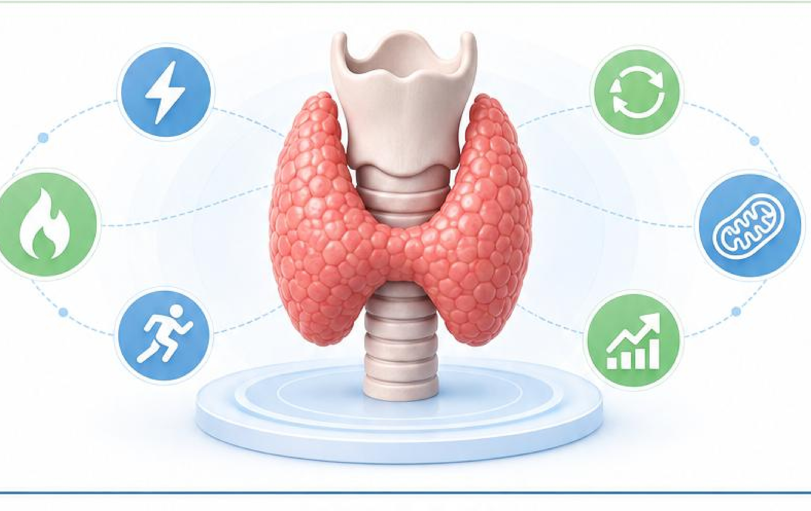

五、甲状腺功能与代谢基础
甲状腺激素水平与全身代谢健康
甲状腺激素是调节全身代谢、能量产生和器官功能的重要激素，本页对您的 7 项甲状腺功能相关指标进行分析和解读。
| 指标 | 结果 | 参考范围 |
|---|---|---|
| 游离三碘甲状腺原氨酸（FT3） | 未识别 | 参考范围：未识别 |
| 三碘甲状腺原氨酸（T3） | 未识别 | 参考范围：未识别 |
| 游离甲状腺素（FT4） | 未识别 | 参考范围：未识别 |
| 甲状腺素（T4） | 未识别 | 参考范围：未识别 |
| 促甲状腺激素（TSH） | 未识别 | 参考范围：未识别 |
| 抗甲状腺球蛋白抗体（TGAb） | 未识别 | 参考范围：未识别 |
| 抗甲状腺过氧化物酶抗体（TPOAb） | 未识别 | 参考范围：未识别 |
解读与结论
未识别到甲状腺功能相关指标的有效检验结果，请人工核对原始报告。
